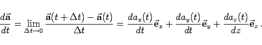
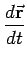
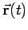
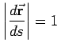

Inhalt Index DeskTop Bronstein

 Vektoranalysis und Feldtheorie Grundbegriffe der Feldtheorie Vektorfunktion einer skalaren Variablen
Vektoranalysis und Feldtheorie Grundbegriffe der Feldtheorie Vektorfunktion einer skalaren Variablen


Die Ableitung der Vektorfunktion einer skalaren Variablen von t (13.1) nach t ist eine neue Vektorfunktion von t:
|  | (13.2) |
Die Ableitung  des Radiusvektors stellt geometrisch betrachtet einen Vektor dar, der in die Richtung der Tangente des Hodographen im Punkt P weist (s. Abbildung).
Seine Länge hängt von der Wahl des Parameters t ab. Wenn t die Zeit ist, dann beschreibt  die Bewegung des Punktes P im Raum, während Größe und Richtung der Geschwindigkeit dieser Bewegung angibt. Ist t=s die Bogenlänge der Raumkurve, gemessen von einem bestimmten Kurvenpunkt an, dann gilt .